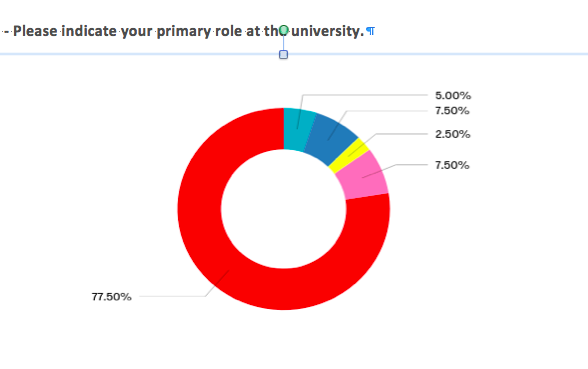
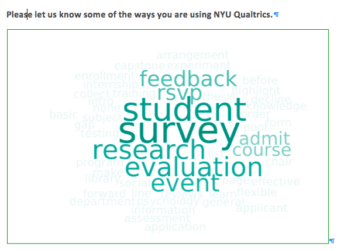
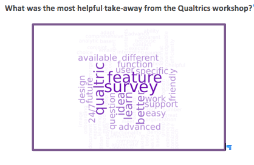
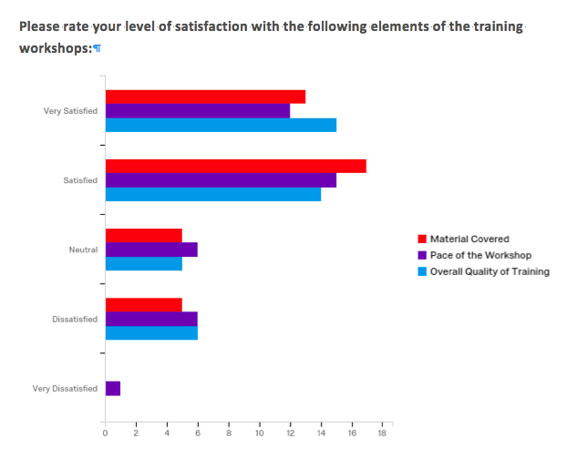

NYU Qualtrics Training took place on November 3, 2016. Here are some of the takeaways:
Emphasis on Enhancing Survey Design Skills for Administrators
NYU Qualtrics Training was a showcase of tools and special features introducing first-time users to a range of possibilities and bringing those already familiar with the web-based survey software up to a new level. Qualtrics Trainers Mick Swenson and Griffin Miller made it look effortless as they jettisoned from an introductory crash course, review of advanced features, and administrative/hr tools answering questions on the fly. A special thanks to Mick and Griffin for flying out from Provo, Utah, to spend the day with us! Here are some of the skills that we took away from the day and uses cases that we’ll be adding to our Qualtrics survey design tool-kit:
Review of the Core Advanced Features:
Reminder for less frequently used features:
Additional Resources
NYU Qualtrics Community
With 109, administrators, staff, students, and faculty in attendance, the training day generated a wide diversity of new approaches and use cases. Here are some snapshots of who is using Qualtrics and how it is being used:
Qualtrics Users

How are you using Qualtrics?

Responses to Qualtrics Day
Helpful takeaways from the workshop

Feedback on the workshop
